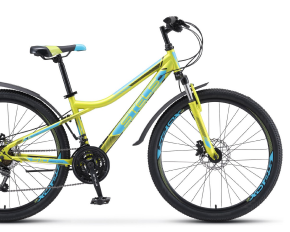

Горный велосипед
Женский велосипед
Горный Велосипед


Велосипед STELS Navigator
510 HD 26 2022
Данный велосипед с колесами 26 дюймов хорошо подходит высоким подросткам. Прогиб рамы и небольшой размер рамы расчитан на рост от 135 до 165 см.
Суммарный вес велосипеда был снижен до 16,9 кг, так как рама была изготовлена с учетом использования велосипеда подростками.
510 HD 26 2022
Данный велосипед с колесами 26 дюймов хорошо подходит высоким подросткам. Прогиб рамы и небольшой размер рамы расчитан на рост от 135 до 165 см.
Суммарный вес велосипеда был снижен до 16,9 кг, так как рама была изготовлена с учетом использования велосипеда подростками.
Характеристики
- Двойной обод
- Алюминиевый сплав
- Колеса диаметром 26 дюймов
- Покрышки 26х1,95"
Добавить характеристику
Пожалуйста, введите характеристику корректно!
Женский Велосипед

Велосипед SCHWINN Traveler
women 2022
Женский велосипед со стальной рамой Classic step-true lightweight позволяет девушкам без проблем его перемещать.
На данном велосипеде имеется 7 скоростей с переключателями от Shimano, а жесткая вилка обеспечивает отличную управляемость. Подходит для катания по асфальтированным поверхностям.
women 2022
Женский велосипед со стальной рамой Classic step-true lightweight позволяет девушкам без проблем его перемещать.
На данном велосипеде имеется 7 скоростей с переключателями от Shimano, а жесткая вилка обеспечивает отличную управляемость. Подходит для катания по асфальтированным поверхностям.
Характеристики
- Стальная рама
- Колеса диаметром 24 дюйма
- Жесткая вилка
- 7 скоростей
Добавить характеристику
Пожалуйста, введите характеристику корректно!
Ваш товар добавлен в корзину
Заказ отменен